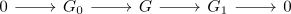
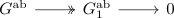

abelianization of a nontrivial nilpotent group is nontrivial
Proposition
Let $G \neq 1$ be a nilpotent group. Then $G^{\mathrm{ab}}$ is not the zero object.
Proof
induction basis
for abelian groups, this is evidently true.
induction step
Let $G$ be a nilpotent group, which is the central extension

with $G_1 \neq 0$ and assume that $G_1^{\mathrm{ab}} \neq 0$ then use that abelianization as left adjoint to get an exact sequence

In particular $G^{\mathrm{ab}}$ surjects onto a nontirival group, i.e. is itself nontrivial.